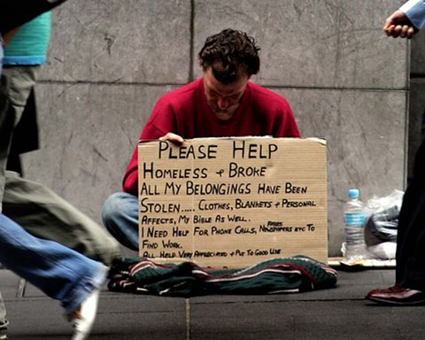

Adventurer
Kingrex a Guru, Adventurer, World Traveller, Philosopher, Comedian and Writer. Trained & Educated by the left but he rejected the brain washing blue pill and never looked back....


Not too long ago, I worked as a domestic violence counselor in Canada. I worked with thousands of victims and perpetrators relating to domestic violence. During that time, I helped a great amount of people and I worked with some wonderful people, which were not most of my colleagues, but the victims of violence or victims of the legal system.
Here are ten important things that I learned working as a male domestic violence counselor in Canada.
Men are presumed guilty and almost always arrested after the accusation is made. The arrest is based upon the accusation, not on evidence. Police will still do an investigation, but an arrest for males is almost guaranteed after a complaint is made. If the female victim claims abuse in her statement, then almost always the male is going to jail.
A man must then prove himself innocent either to the prosecutor (crown) or to the judge in a trial, not usually to the police. There doesn’t need to be any evidence to arrest a man, just an accusation.
If a woman is charged with domestic violence, the police often do more of a thorough investigation or there is overwhelming evidence to support that the woman is a perpetrator. However, what often happens is the woman will claim self-defense and her accusation will cause the man to be arrested, even if the man was the one who was the victim of the assault.
Many men charged with a domestic charge never laid hands on a woman or caused any bodily harm. A threat or act of violence such as punching your hand in the wall or destroying your own property in front of a woman is grounds to be arrested. So, for example, you find out your girlfriend stole all your money, get upset, and punch a wall. If the police are called, you can be charged with domestic violence.
The police lay the charges, not the victim, so a hole in the wall and a neighbour hearing yelling can lead to an arrest.
Most of the men charged with domestic violence do not fit the stereotype of guys in white wifebeater shirts, unemployed, or have low IQ’s. In fact, most men I worked with loved their families, believed that violence was wrong, and were employed. Some were police officers, doctors, and even professional athletes, but most men were regular Joes.

If you’re accused of a domestic charge, you will be treated the same way as any other man. Guilty ’til proven innocent! Your colour, age, or religion doesn’t matter: it just takes an accusation from someone with a vagina to get arrested.

The stereotype that most domestic violence counselors are feminists that hate men is 100 percent true. Most of my colleagues looked like Big Red and had the same type of mentality. The organizations that operate the men’s rehab program are almost always run by feminist women.
Most women I worked with enjoyed yelling at the men and saw it as their opportunity to get even. Some even had the goal to see men cry or to get them to leave the group so they would be charged by police for not completing their court sentence.
If a male victim reveals that he needs financial assistance or a safe place to go, there is often no support from the community. Males are left to fend for themselves completely.
Ironically, men are also charged a fee for the program and women usually were not. If a man is on welfare, the taxpayer—who is already subsidizing the program—would have to completely pay for his mandatory training.

Organizations and feminist groups state they want to end violence towards women and blame domestic violence on men’s behaviour. However, once you mention spending money on programs for men, they shut the conversation down.
Prevention programs, education groups, and support programs to assist young boys or to help men having problems would help prevent domestic violence. Hiring male role models or having programs to support dads or open shelters for male victims would also alleviate the amount of incidents. Feminists groups only want spend on themselves or on women, and their solution for men is jail time.

The two most common factors present when people admitted they committed domestic violence were drugs and alcohol.
Females convicted of domestic violence are treated like victims, not perpetrators. They are given shorter sentences and have greater access to housing, money, and free counselling.
Women’s mandatory education groups are free and are run like support groups where they are not yelled at but instead given cookies, coffee, and hugs.
The methodology is flawed, service delivery is defective, and the approach is misguided. There is nothing good about the current domestic violence prevention programs.
Feminists created and designed an anti-domestic violence model called the Duluth model with no insight into men’s behaviour, no understanding of counselling or therapy models, and as a result, domestic violence programs are complete failures.
The rehabilitation programs and legal approaches currently being used are not preventing violence, not rehabilitating offenders, and not keeping anyone safer. Often, repeat offenders keep attending the same programs as they learn nothing in group when the facilitator is just there to yell at them.
Until the system is rebooted—and men actually have a voice in the discussion—nothing will change. Feminists should not be in charge of men’s rehabilitation programs.
Read More: Yet Another Survey Shows That LGBT Domestic Violence Rates Are The Same As Heterosexual Couples